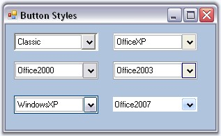
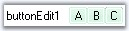
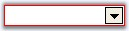
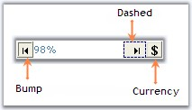
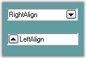
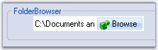
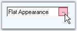
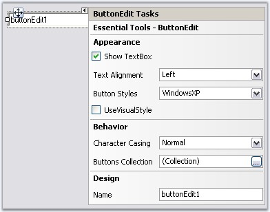

The following topics will help you become more familiar in using the ButtonEdit control.
A ButtonEdit control is a combination of controls with textbox and buttons. The buttons are normal windows buttons which supports all their properties and events. The ButtonEdit control itself supports properties which controls the appearance and behavior of the control. This section will discuss those properties in the below topics.
See Also
TextBox Settings for ButtonEdit, Child Button Customization
This section discusses the different styles available for the ButtonEdit control.
Button Styles
Styles for the ButtonEdit control is specified using ButtonStyle property.
|
Properties |
Description |
|
ButtonStyle |
Specifies the button style for the control. The styles are,
Classic, Office2000, WindowsXP, OfficeXP, Office2003 and Office2007. |
|
UseVisualStyle |
Specifies whether the visual styles can be applied using ButtonStyle property or not. This property should be set to true to make the ButtonStyle setting effective. |
|
[C#]
this.buttonEdit3.UseVisualStyle = true; this.buttonEdit3.ButtonStyle = Syncfusion.Windows.Forms.ButtonAppearance.Classic; |
|
[VB.NET]
Me.buttonEdit3.UseVisualStyle = True Me.buttonEdit3.ButtonStyle = Syncfusion.Windows.Forms.ButtonAppearance.Classic |

Figure 169: ButtonStyles for ButtonEdit Control
 Note: ButtonEdit control also supports
all the three windows color themes, i.e., Blue, Silver and Oliver themes. We
need to change the Windows theme color in desktop properties for this.
Note: ButtonEdit control also supports
all the three windows color themes, i.e., Blue, Silver and Oliver themes. We
need to change the Windows theme color in desktop properties for this.
Custom Colors
We can also apply custom colors to the ButtonEditControl by setting Office2007ColorScheme of individual child buttons to "Managed" and specifying the custom color through the ApplyManagedColors method as follows.
|
[C#]
this.buttonEditChildButton1.Office2007ColorScheme = Syncfusion.Windows.Forms.Office2007Theme.Managed; this.buttonEditChildButton2.Office2007ColorScheme = Syncfusion.Windows.Forms.Office2007Theme.Managed; this.buttonEditChildButton3.Office2007ColorScheme = Syncfusion.Windows.Forms.Office2007Theme.Managed; Office2007Colors.ApplyManagedColors(this, Color.LightGreen); |
|
[VB.NET]
Me.buttonEditChildButton1.Office2007ColorScheme = Syncfusion.Windows.Forms.Office2007Theme.Managed Me.buttonEditChildButton2.Office2007ColorScheme = Syncfusion.Windows.Forms.Office2007Theme.Managed Me.buttonEditChildButton3.Office2007ColorScheme = Syncfusion.Windows.Forms.Office2007Theme.Managed Office2007Colors.ApplyManagedColors(Me, Color.LightGreen) |

Figure 170: CustomColor Of Child Buttons= "LightGreen"
Border Styles
The border styles for the ButtonEdit can be controlled using the below properties.
|
Properties |
Description |
|
Border3DStyle |
Sets the 3D border style for the control. The options are,
RaisedOuter, RaisedInner, SunkenOuter, SunkenInner, Raised, Sunken, Etched, Flat, Adjust and Bump. |
|
BorderSides |
Specifies the sides of the control which should have border. |
|
FlatStyle |
Specifies the flat style to be applied to the ButtonEdit control. Set UseVisualStyle property to false to make this setting effective. |
|
FlatBorderColor |
Specifies the border color for the control, when FlatStyle is set to "Flat".
This color setting can be reset by calling ButtonEdit.ResetFlatBorderColor method. |
|
[C#]
this.buttonEdit3.UseVisualStyle = false; this.buttonEdit3.FlatBorderColor = System.Drawing.Color.Red; this.buttonEdit3.FlatStyle = System.Windows.Forms.FlatStyle.Flat; |
|
[VB.NET]
Me.buttonEdit3.UseVisualStyle = False this.buttonEdit3.FlatBorderColor = System.Drawing.Color.Red; this.buttonEdit3.FlatStyle = System.Windows.Forms.FlatStyle.Flat; |

Figure 171: FlatBorderColor="Red"
Note: The Border styles of the child buttons
can be controlled using ButtonEditChildButton.BorderStyleAdv property. SeeSee
Button Types and Border Styles topic for details.
Size Settings
We can specify the maximum and minimum size for the ButtonEdit control using MaximumSize and MinimumSize properties.
|
Properties |
Description |
|
MaximumSize |
Sets the maximum size of the ButtonEdit control. |
|
MinimumSize |
Sets the minimum size of the ButtonEdit control. |
See Also
3.3.2.2.3.1.2 Foreground Settings
This section discusses the foreground settings available for the ButtonEdit control.
Font and ForeColor
The font style and the forecolor for the ButtonEdit text can be set using Font and ForeColor properties. These property settings can be overridden by TextBox.Font and TextBox.ForeColor respectively.
|
[C#]
this.buttonEdit3.Font = new System.Drawing.Font("Verdana", 8.25F, System.Drawing.FontStyle.Regular); this.buttonEdit3.ForeColor = Color.SteelBlue; |
|
[VB.NET]
Me.buttonEdit3.Font = New System.Drawing.Font("Verdana", 8.25F, System.Drawing.FontStyle.Regular) Me.buttonEdit3.ForeColor = Color.SteelBlue |
Note: Foreground settings for the child
buttons can be specified using ButtonEditChildButton.Font and
ButtonEditChildButton.ForeColor properties.
Figure 172: Foreground Text of Child Button Overriding ButtonEdit Foreground Settings
Case Settings
Using ButtonEdit.CharacterCasing property, we can specify whether the case of the character can be modified as they are typed. The values are Upper, Lower and Normal.
|
[C#]
this.buttonEdit3.Font = new System.Drawing.Font("Verdana", 8.25F, System.Drawing.FontStyle.Regular); this.buttonEdit3.ForeColor = Color.SteelBlue; |
|
[VB.NET]
Me.buttonEdit3.Font = New System.Drawing.Font("Verdana", 8.25F, System.Drawing.FontStyle.Regular) Me.buttonEdit3.ForeColor = Color.SteelBlue |
Note: This case setting can be overridden
by TextBox.CharacterCasing property.
See Also
TextBox Settings for ButtonEdit
The child buttons in a ButtonEdit control are normal windows button, but supports additional features within our ButtonEdit control. Those features are discussed in the below topics.
3.3.2.2.3.2.1 Button Types and Border Styles
Button Types
The button types for ButtonEdit control are similar to that of ButtonAdv control. Refer Button Types topic for details.
Use ButtonEditChildButton1.ButtonType property for setting the button types of the child buttons.
Border Styles
The border styles for the child buttons can be set through BorderStyleAdv property.
|
Property |
Description |
|
BorderStyleAdv |
Specifies the border style for child buttons of the ButtonEdit control. The styles are,
None, Default, Dashed, Dotted, Inset, Outset, Solid, Bump, Etched, Flat, Raised, RaisedInner, RaisedOuter, Sunken, SunkenInner and SunkenOuter. |
Note: This setting will be effective only
for Office2003, OfficeXP and WindowsXP styles set through ButtonEdit.ButtonStyle
property. See Style Settings. We can also set
border style for ButtonEdit controls without enabling visual styles.
|
[C#]
//Sample code for setting "Bump" Border Style for BorderEdit Child Button this.buttonEditChildButton4.BorderStyleAdv = Syncfusion.Windows.Forms.ButtonAdvBorderStyle.Bump; |
|
[VB.NET]
'Sample code for setting "Bump" Border Style for BorderEdit Child Button Me.buttonEditChildButton4.BorderStyleAdv = Syncfusion.Windows.Forms.ButtonAdvBorderStyle.Bump |

Figure 173: Border Styles set for Child Buttons
See Also
Style Settings, How to set tooltip for ButtonEdit Child buttons?
The properties which controls the appearance and behavior of the ButtonEdit Child Buttons are listed below with their description.
Button Alignment
Placement of the child buttons inside the ButtonEdit control is set through below property.
|
Property |
Description |
|
ButtonAlign |
Specifies whether the child button should be aligned to left or right of the ButtonEdit control. |
|
[C#]
this.buttonEditChildButton6.ButtonAlign = Syncfusion.Windows.Forms.Tools.ButtonAlignment.Left; |
|
[VB.NET]
Me.buttonEditChildButton6.ButtonAlign = Syncfusion.Windows.Forms.Tools.ButtonAlignment.Left |

Figure 174: Child Button Alignments
Note: There is no support for placing
more than one buttons on the same side. We need to add the buttons in the order
we require.
Image Settings
The below properties can be used to set text and image for the child buttons.
|
Properties |
Description |
|
Image |
Sets image for the child button. |
|
ImageAlign |
Sets alignment of the image. |
|
ImageIndex |
Sets the index of the image to be set for the child button. |
|
ImageList |
Indicates the imagelist to be used for child button. |
|
PreferredWidth |
Specifies the width of the button. Default value is 18. |
|
Text |
Sets text for the button if ButtonType is set to Normal. |
|
TextAlign |
Sets the alignment of the text in the child button control. |
|
TextImageRelation |
Sets the relative location of the image to the text in the button. |
|
[C#]
this.buttonEditChildButton2.Image = ((System.Drawing.Image)(resources.GetObject("buttonEditChildButton2.Image"))); this.buttonEditChildButton2.ImageAlign = System.Drawing.ContentAlignment.MiddleLeft; this.buttonEditChildButton2.Text = "Browse"; this.buttonEditChildButton2.TextAlign = System.Drawing.ContentAlignment.MiddleLeft; this.buttonEditChildButton2.TextImageRelation = System.Windows.Forms.TextImageRelation.ImageBeforeText; this.buttonEditChildButton2.PreferredWidth = 64; |
|
[VB.NET]
Me.buttonEditChildButton2.Image = DirectCast((resources.GetObject("buttonEditChildButton2.Image")), System.Drawing.Image) Me.buttonEditChildButton2.ImageAlign = System.Drawing.ContentAlignment.MiddleLeft Me.buttonEditChildButton2.Text = "Browse" Me.buttonEditChildButton2.TextAlign = System.Drawing.ContentAlignment.MiddleLeft Me.buttonEditChildButton2.TextImageRelation = System.Windows.Forms.TextImageRelation.ImageBeforeText Me.buttonEditChildButton2.PreferredWidth = 64 |

Figure 175: TextAlign = "MiddleLeft"; ImageAlign = "MiddleLeft"; TextImageRelation = "ImageBeforeText"
Flat Style for the Buttons
|
Properties |
Description |
|
FlatAppearance |
Represents the appearance of the border and the color for the check state and mouse over state. Set FlatStyle to Flat and UseVisualStyleBackColor should be set to false to make this setting effective. |
|
FlatStyle |
Specifies the flat style for the button. The options are Flat, Popup, Standard and System. |
|
[C#]
this.buttonEditChildButton5.FlatStyle = System.Windows.Forms.FlatStyle.Flat; this.buttonEditChildButton5.FlatAppearance.BorderColor = System.Drawing.Color.Crimson; this.buttonEditChildButton5.FlatAppearance.MouseOverBackColor = System.Drawing.Color.Pink; |
|
[VB.NET]
Me.buttonEditChildButton5.FlatStyle = System.Windows.Forms.FlatStyle.Flat Me.buttonEditChildButton5.FlatAppearance.BorderColor = System.Drawing.Color.Crimson Me.buttonEditChildButton5.FlatAppearance.MouseOverBackColor = System.Drawing.Color.Pink |

Figure 176: CrimsonRed Border Color with Pink MouseHover Color
Style Settings
|
Properties |
Description |
|
UseVisualStyleBackColor |
Determines whether the background of child button is drawn using visual style if the button supports visual styles. |
|
Office2007ColorScheme |
Specifies the office color scheme. |
Note: Visual style of a child buttons is
inherited from the visual style of it's parent (ButtonEdit) control. See
Style Settings topic. You can override those settings using the above
properties.
Focusing the Child Button at Runtime
The Child buttons can be focussed based on the order of the ChildButton.TabIndex set for individual buttons. ChildButton.TabStop property should be set to true to make this effective. While focusing the button, we can either display or don't display a focus rectangle, by using the ButtonEdit.KeepFocusRectangle property.
|
[C#]
this.buttonEditChildButton3.KeepFocusRectangle = true; |
|
[VB.NET]
Me.buttonEditChildButton3.KeepFocusRectangle = True |
Figure 177: Focus Rectangle for Child Button
See Also
How to hide a child button of a ButtonEdit control?
The default textbox within the ButtonEdit control can be replaced with any custom textbox like PercentTextBox, IntegerTextBox, and so on. The properties of Embedded textbox of a ButtonEdit control are discussed below.
|
ButtonEdit Properties |
Description |
|
ShowTexBox |
Indicates whether the embedded TextBox is visible in the ButtonEdit control. This property setting can be reset to default by calling ResetShowTextBox method. |
|
SelectionLength |
Sets the selection length of the embedded TextBox. This property setting can be reset to default by calling ResetSelectionLength method. |
|
SelectionStart |
Sets the SelectionStart property of the ButtonEdit control which is same as the TextBoxBase.SelectionStart of the embedded TextBox. This property setting can be reset to default by calling ResetSelectionStart method. |
|
[C#]
this.buttonEdit1.SelectionLength = 1; this.buttonEdit1.SelectionStart = 3; this.buttonEdit1.ShowTexBox = true; |
|
[VB.NET]
Me.buttonEdit1.SelectionLength = 1 Me.buttonEdit1.SelectionStart = 3 Me.buttonEdit1.ShowTexBox = True |
Note: To increase the height of the
ButtonEdit control, make the text as multiline textbox.
ButtonEdit control has Smart Tag, which lets you set the properties easily.
Smart Tag Options

Figure 178: TaskWindow of ButtonEdit Control
The Options are as follows.
· Show TextBox - Shows or hides embedded textbox.
· Text Alignment - Sets alignment of the text.
· Button Styles - Sets the button styles
· UseVisualStyle - Enables or disables visual style for the control.
· Character Casing - Set the case settings for the text in the textbox.
· ButtonCollection - Opens Button Collection Editor.
· Name - Sets the name of the ButtonEdit control.